DV-CQ-030 · Perfil só de consulta cria checklist de verificação
O usuário só de consulta abriu a tela Edit pelo endereço e gravou o checklist nº 6 "TESTE R2 CONSULTA VERIFICACAO".
Como reproduzir o erro, passo a passo
- Entrar com o perfil só de consulta.
- Abrir Verificação de Amostragens › Edit pelo endereço, informar a descrição, Ativo = Sim e Salvar.
Esperado
Recusar a gravação (e esconder o botão) para um perfil que só tem a consulta da tela; registrar a tentativa.
Obtido
"Confirma a inclusão do item?"; o checklist aparece na lista.
Evidência (captura da tela)
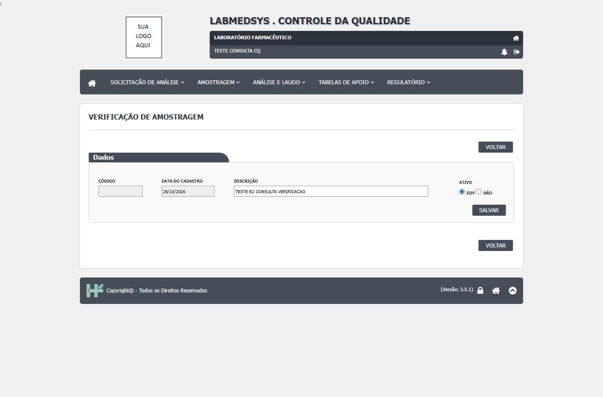
DV-CQ-018 · Excluir coleta agendada e excluir checklist de verificação não pedem justificativa nem deixam histórico
Na agenda de ambiente, a coleta de 27/10 foi excluída pelo ícone da lixeira: só "Deseja excluir a Solicitação?" e pronto; a solicitação sai da lista e o log dela diz **"NÃO EXISTE LOG DE ALTERAÇÃO PARA ESTE REGISTRO."** Na **Verificação de Amostragens**, a exclusão de um checklist também não pediu justificativa e o log do cadastro mostra só a inclusão.
Como reproduzir o erro, passo a passo
- Na agenda, arrastar uma sala para um dia futuro e depois clicar na lixeira do evento.
- Em Verificação de Amostragens, excluir um checklist e abrir o ícone Log.
Esperado
Justificativa obrigatória e histórico da exclusão.
Obtido
Sem justificativa e sem histórico.
Evidência (captura da tela)
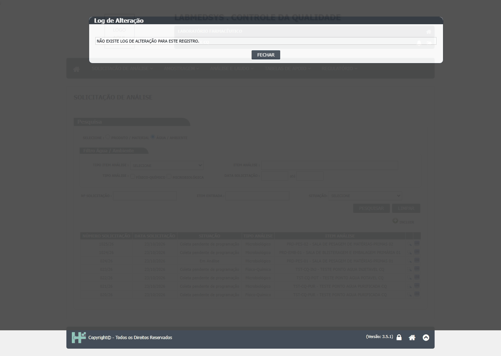
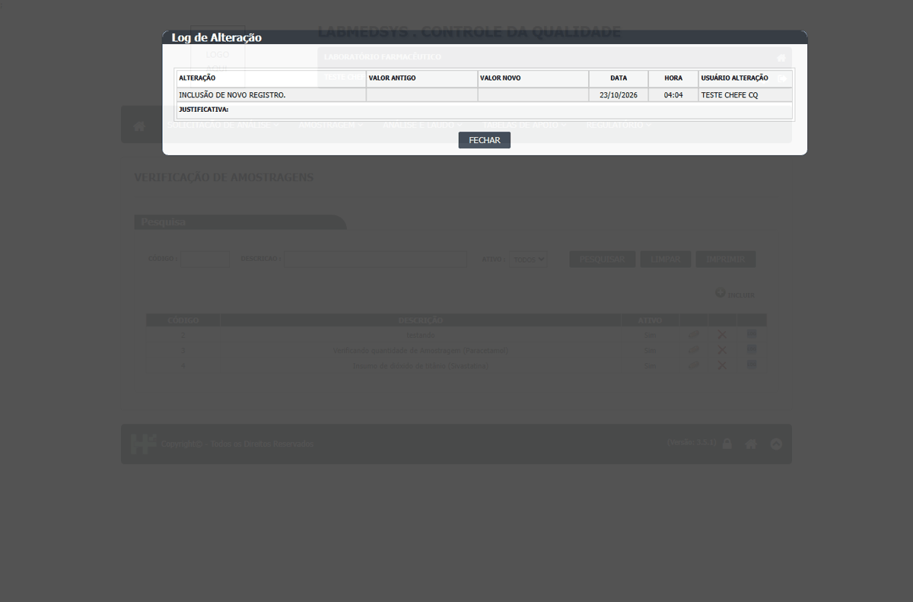
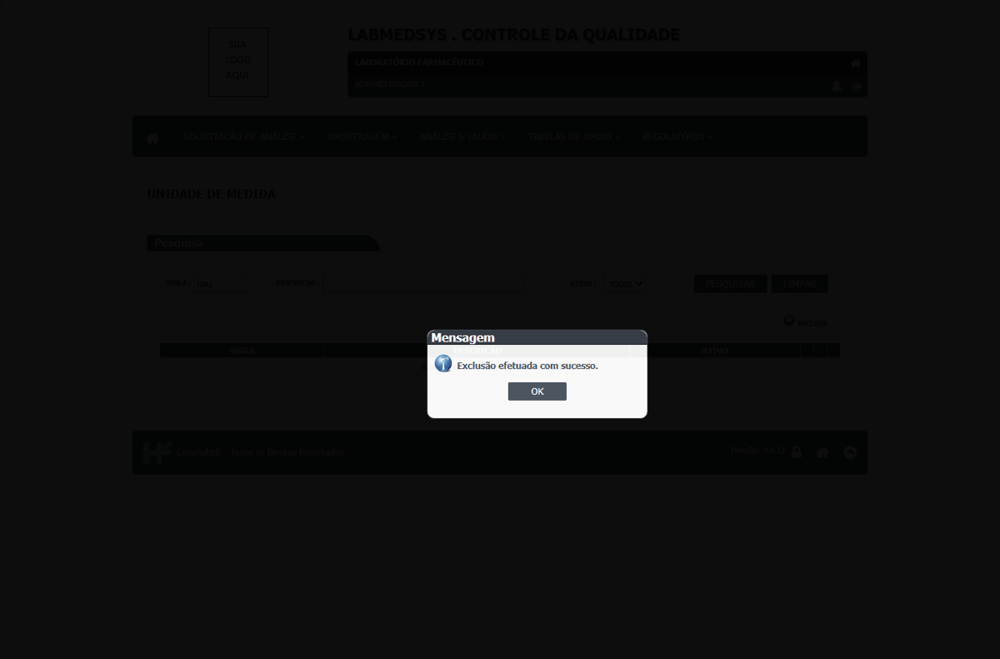
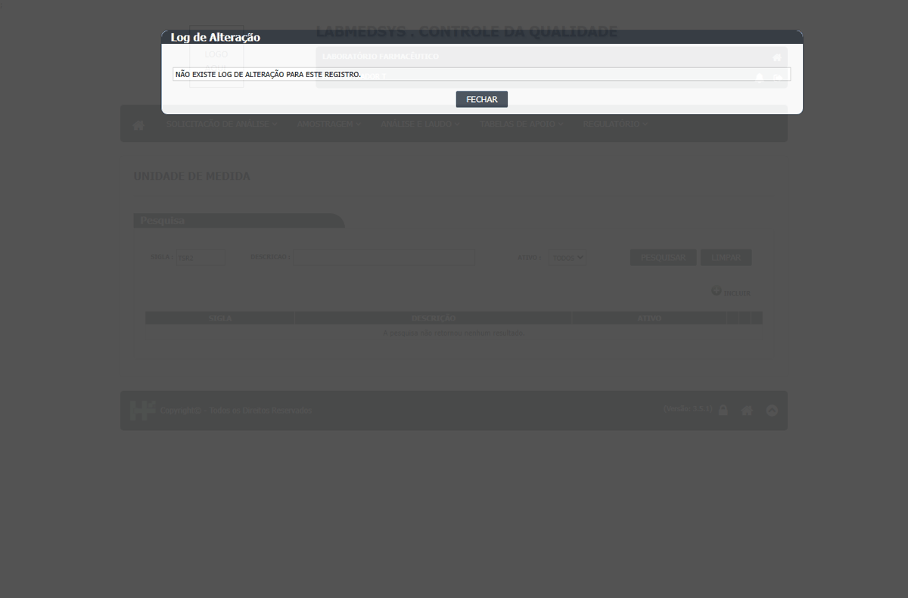
DV-CQ-048 · A exclusão em Unidade de Medida, Motivos e Verificação de Amostragens apaga o registro sem pedir justificativa e sem deixá-lo à vista (nem inativado)
O X vermelho (título "Excluir") pergunta só "Confirma a exclusão do item?" (SIM ou NÃO). **Não pede justificativa**, ao contrário das edições, que gravam a justificativa no LOG. Depois de confirmar, o registro **desaparece da lista**, inclusive com Ativo = Todos, ou seja, é apagamento, não inativação. Não há como abrir o LOG de um registro apagado (inferência: o LOG só se abre pela linha da lista). Na Verificação de Amostragens, a exclusão da verificação nº 8 ("DUPLICADO_CODIGO: 2") respondeu "Exclusão efetuada com sucesso." e ela saiu da lista. Complementa o DV-CQ-013 (unidade usada numa regra pode ser excluída) e o DV-CQ-015 (perfil de consulta consegue excluir). O LOG de unidades antigas mostra "NÃO EXISTE LOG DE ALTERAÇÃO PARA ESTE REGISTRO." (registros sem trilha).
Como reproduzir o erro, passo a passo
- Unidade de Medida: incluir TSBT1 (ver DV-CQ-047), pesquisar, clicar no X, NÃO (a unidade fica), clicar de novo, SIM.
- Pesquisar com Ativo = Todos; o registro não existe mais.
- Verificação de Amostragens: excluir a verificação de teste nº 8.
Esperado
Exclusão com justificativa e registro mantido inativo, com trilha.
Obtido
Apagamento sem justificativa; sem registro à vista.
Evidência (captura da tela)
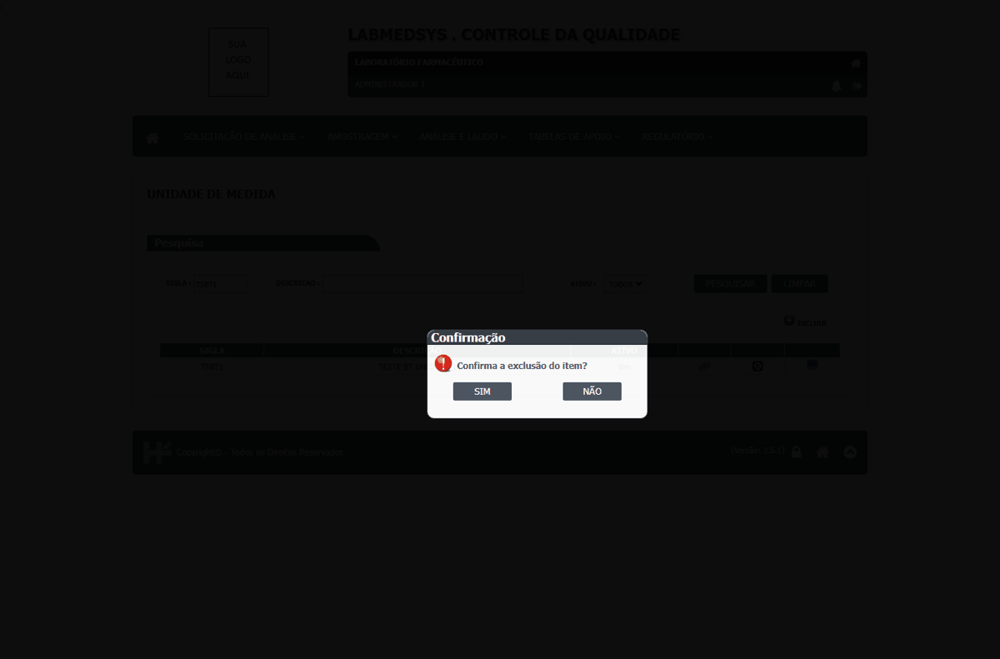
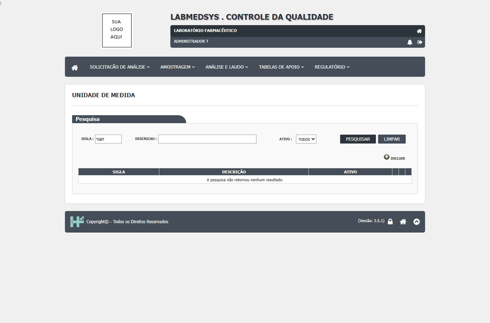
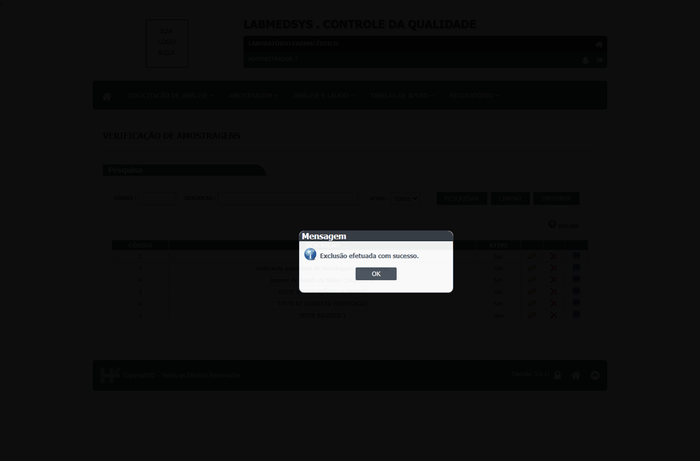
DV-CQ-046 · A segunda versão da Verificação de Amostragens recusa até o administrador, e a recusa de acesso volta como HTTP 200
O código tem uma segunda versão da tela (Coleta/VerificacaoAmostragem) que o menu não alcança. Ao pedir o endereço, o administrador recebe "Não autorizado: o usuário não tem permissão para esta página", então ninguém consegue ver essa tela. A recusa volta com **HTTP 200** (e não 401 ou 403), de modo que monitoramento e testes automáticos não distinguem acesso negado de acesso feito. O menu, por sua vez, repete "Verificação de Amostragens" e os dois itens levam à tela de sempre (já registrado no DV-CQ-026).
Como reproduzir o erro, passo a passo
- Entrar como administrador de teste no Controle da Qualidade.
- Pedir o endereço /Coleta/VerificacaoAmostragem.
- Ver a mensagem e o código de resposta.
Esperado
A tela existir e abrir para quem tem a função, ou ser retirada do código; a recusa de acesso responder 401 ou 403.
Obtido
"Não autorizado" para o administrador, com HTTP 200; tela não vista (Bloqueada no teste).
Evidência (captura da tela)
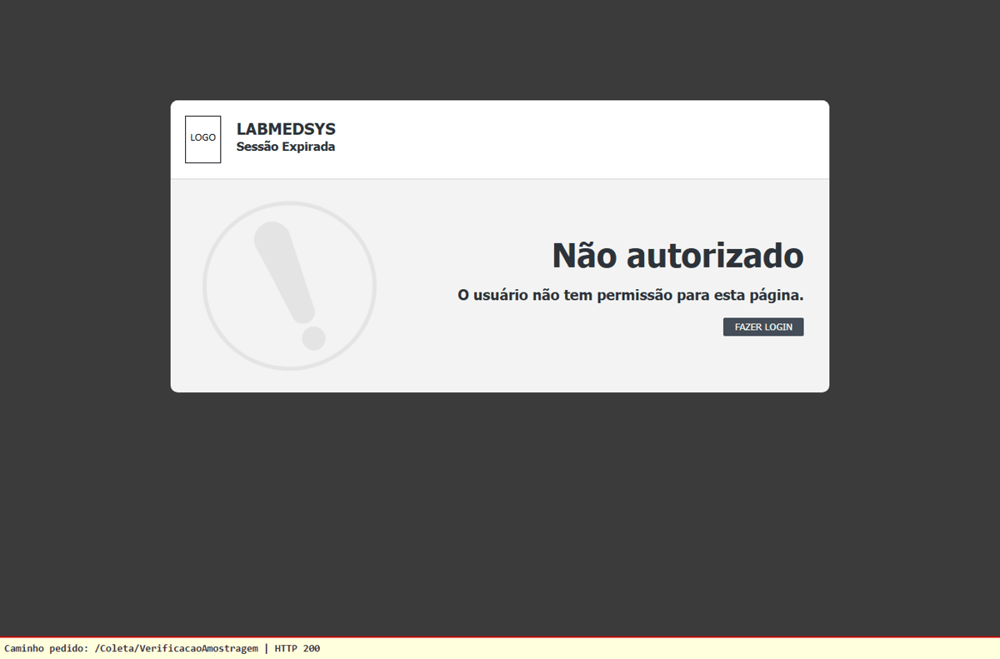
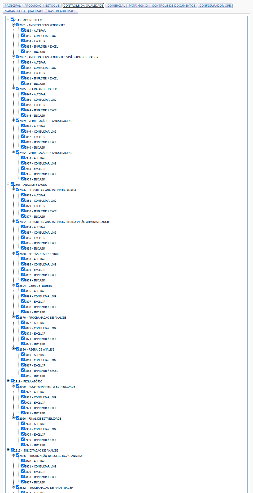
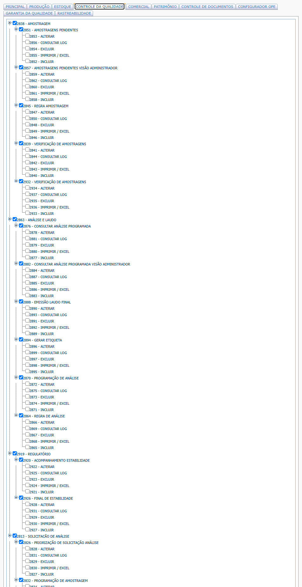